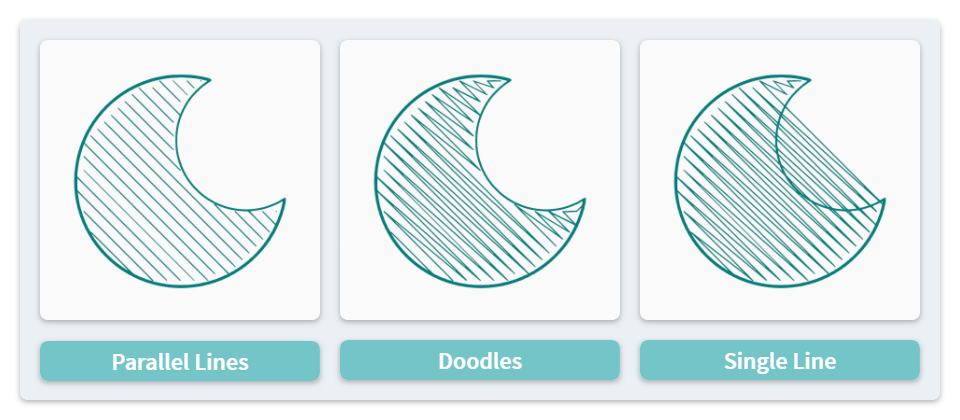
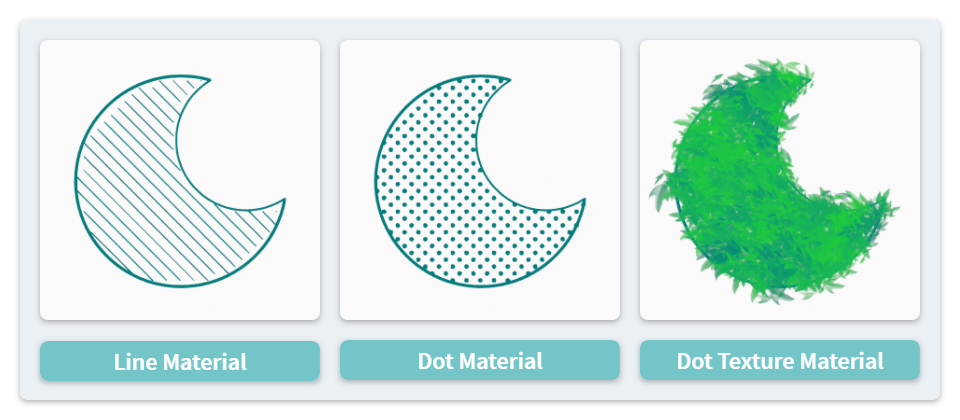

Hatch Fill #
This is an Edit mode operator to generate doodle or hatch patterns inside the selected stroke shapes. Various types of stylized shading or coloring effects can be achieved with different combinations of options.
Line Styles #
The operator will generate a grid of points inside each selected shape, while there are multiple ways to connect these points as new strokes:

-
Single-Line Doodle: In this mode, all points will be connected together to ensure that each input stroke generates only one output stroke.
- Please notice that it is possible for the hatch pattern to go out of the input shape, if the input shape is not convex.
-
Doodles: In this mode, points will be connected as much as possible. Depending on the input shape, the hatch may break into multiple strokes.
-
Parallel Lines: In this mode, points only connect in one direction, which often leads to many output strokes for each input stroke.
Choice of Materials #
It is recommended to set line-only materials for output. Depending on the Line Type (“Line” or “Dots”) and whether to use a texture or not, different effects can be achieved.

Noise Options #
There are several options to randomize different attributes of the output stroke points, including direction, position, radius and UV. This feature can be useful when:
- Generating hatch patterns with a hand-drawn look, or
- Using output materials with textures.
(The example texture shown in this page is from the SeerStuff brush set created by SeerLight.)